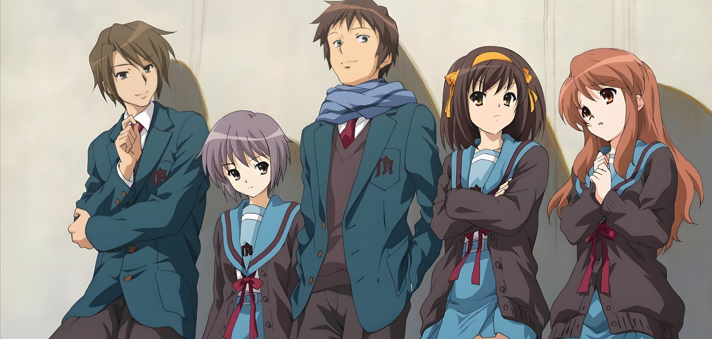

凉宫春日的忧郁
《凉宫春日的忧郁》是由日本轻小说家谷川流创作、插画师伊东杂音负责插画的轻小说系列《凉宫春日系列》的第一册。这部作品以其独特的科幻冒险故事背景、丰富的人物塑造以及深刻的主题，成为了一部深受读者喜爱的作品。
故事简介:故事的主角是北高一年级的阿虚，他被一个自称“对普通人类没有兴趣”的美女凉宫春日强迫加入了SOS团（让世界热闹起来的凉宫春日的团）。随着时间的推移，阿虚逐渐发现SOS团的成员除了他和凉宫春日外，还包括外星人、未来人和超能力者等超自然存在。这些超自然的存在与凉宫春日的能力有关，而凉宫春日本人对此并不自知。